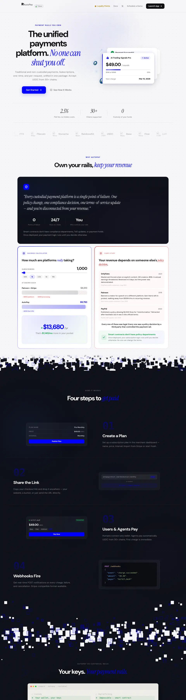
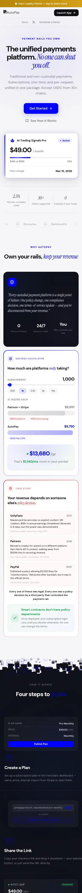
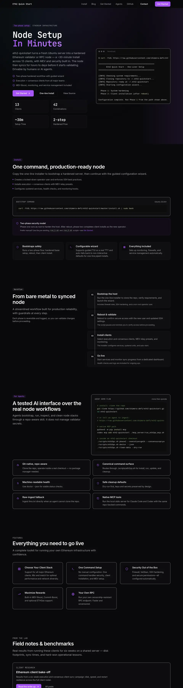
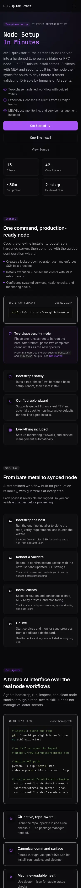

What it looked like
Websites go offline. These screenshots keep a record of ours.
- AutoPay, our partner's payments app, went offline in 2026. Its design is worth learning from.
- SharedStake's live site has an expired certificate. We show the June archive copy.
- Sharedtools and Eth2 Quickstart are still live. We captured them today.
AutoPay Protocol
Offline. The site returned HTTP 503 on 2026-10-31. These shots come from the Internet Archive copy of 2026-05-16.


Eth2 Quickstart
Live. Captured 2026-10-31.


How these were made
Method and limits
- Headless Chromium, full page, at 1280 and 390 px wide.
- Archive copies load through web.archive.org. Some images, fonts and forms are missing there.
- Long pages are cropped to keep files small.
- No wallets were connected. Nothing on these pages is account data.